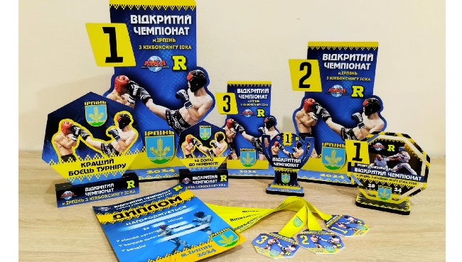
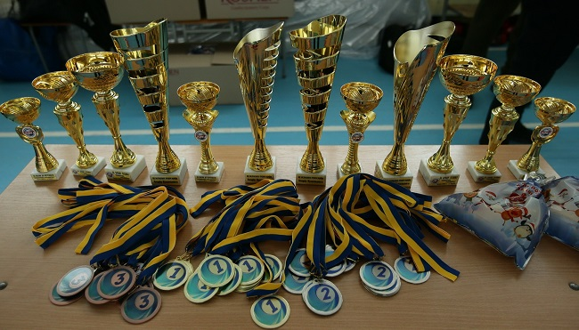
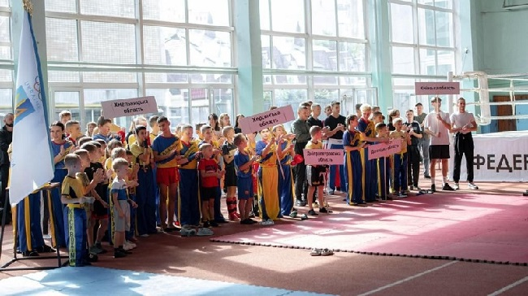
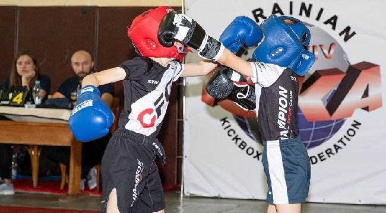
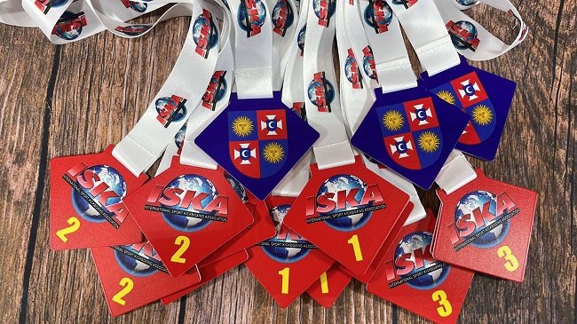
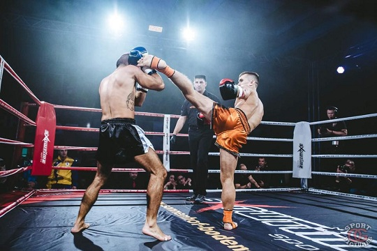
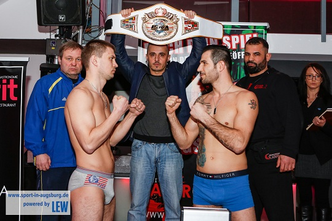
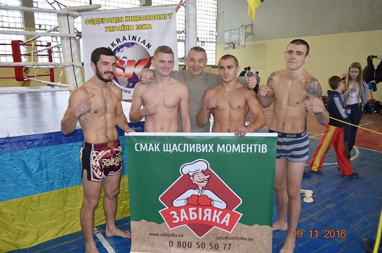
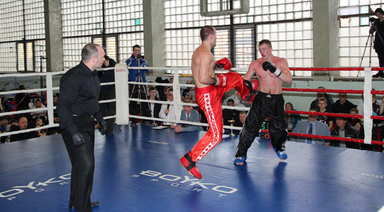
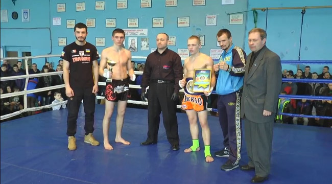

ВСЕУКРАЇНСЬКІ НОВИНИ

2024.03.29
Федерація кікбоксингу України ІСКА разом з ГО «Спільна перемога» влаштувала дітям в Охматдиті невеличкий майстер-клас та тренування з кікбоксингу.

2024.03.04
02 березня 2024 за підтримки управління у справах сім'ї, молоді та спорту Чернігівської міської ради відбувся "Відкритий чемпіонат м. Чернігова з кікбоксингу ІСКА" серед дорослих, юніорів, юнаків старшого та молодшого віку та дітей старшого віку.

2024.01.29
27 січня 2024 відбувся відкритий Чемпіонат м. Ірпінь з кікбоксингу ІСКА.

2023.12.25
У м.Чернігові відбувся відкритий чемпіонат ЧОО ГО «ВФСТ «Україна» з кікбоксингу ІСКА на честь загиблих героїв України, відомий як «Новорічна рукавичка»

2023.09.18
16-17 вересня 2023 року у місті Хмельницькому на базі "Хмельницького обласного центру фізичного виховання учнівської молоді" відбувся Відкритий Кубок Міського Голови з кікбоксингу ІСКА.

2023.05.29
28 травня на День Києва відбувся відкритий турнір з кікбоксингу ІСКА «KYIV-OPEN».

2023.04.11
Вінницька Федерація кікбоксингу IСКА - 9 квітня 2023 року провела Чемпіонат Вінницької області з кікбоксингу ІСКА.
ISKA PRO

2017.11.07
4 листопада 2017 року відбулися титульні про аматорські поєдинки в дисціплині К-1.

2017.02.21
19 лютого 2017 року у місті Кенігсбрунн (Баварія, Німеччина) відбувся бій за Титул Чемпіон Світу ISKA Semi Pro Full у ваговій категорії до 75 кг.

2016.11.22
20 листопада 2016 року в м.Києві в рамках благодійного заходу "За Україну без дитячих захворювань".

2016.03.13
12 березня 2016 року в м. Києві, в період проведення Чемпіонату України з кікбоксингу ISKA в спорткомплексі київського національного університету будівництва та архітектури відбувся бій двох професорів кікбоксингу Чочії Тимура м. Київ, та Науменко Антон м. Харків за звання "чемпіон України з кікбоксингу ISKA SEMI-PRO FULL 85 кг".

2016.02.15
В місті Кременчук 14 лютого 2016 року, під час проведення змагань "Пам’яті героїв - кременчужан, загиблих в зоні АТО", відбувся титульний бій серед професіоналів - за звання "Чемпіон України з кікбоксингу ІСКА" в розділі К-1, у вазі 63,5 кг.
СЛОВО ПРЕЗИДЕНТА ФЕДЕРАЦІЇ
 Христос Воскрес!
Христос Воскрес!
Цими священними, вічно живими словами православні християни вітають один одного зі святом Воскресіння Христового!
Велич свята стверджує перемогу добра над злом, життя над смертю, віри над безнадією!
Великдень є втіленням жертовності та величі духу, торжеством, вірою в божественну милість і порятунок!
Зичу Вам духовного оновлення, благословіння миром, тепла і радості в кожне серце, злагоди та достатку у Ваші родині!


ПОДІЇ

Відкритий чемпіонат Німеччини

Відкритий чемпіонат м. Києва

Чемпіонат світу ІSKA - 2024

Чемпіонат м.Хмельницький - 2024

Чемпіонат України ІСКА - 2024

Чемпіонат Вінницької області